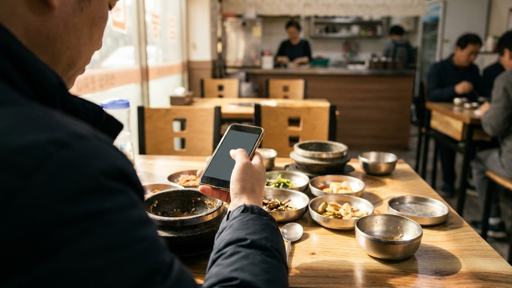
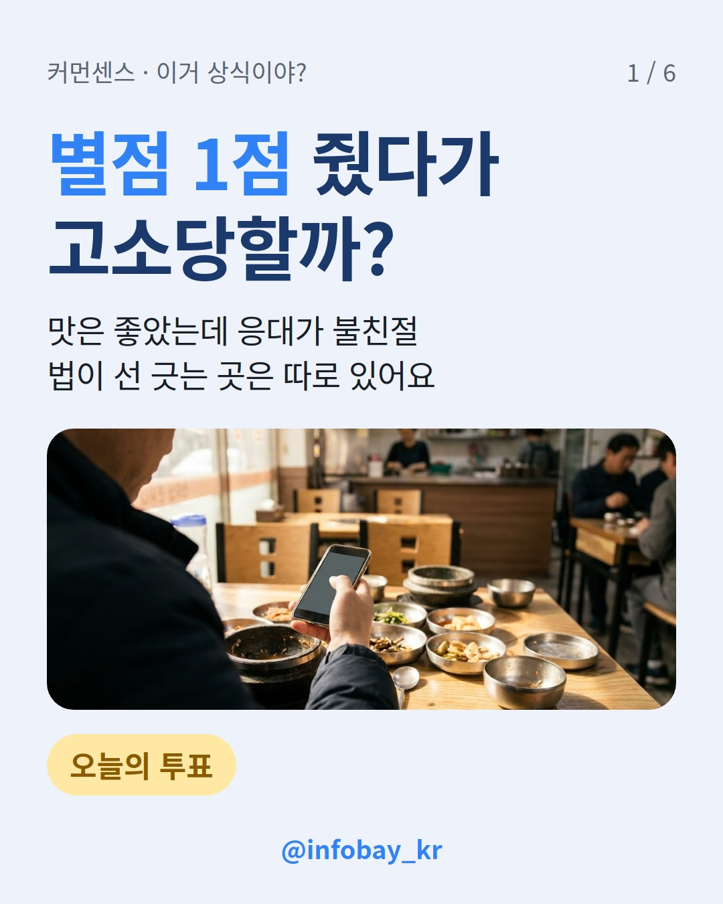
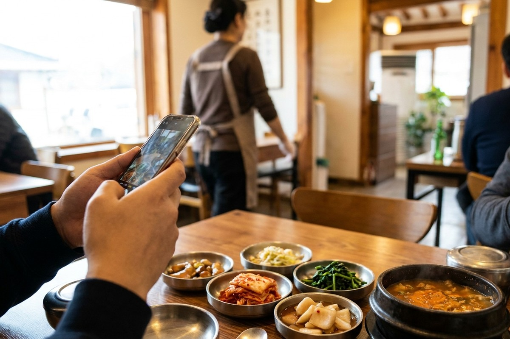

맛은 좋았는데 사장님이 불친절했다면, 별점 1점 줘도 될까요?
한 줄 결론: 직접 겪은 불친절을 '불친절했다'고 쓰는 건 의견 표현이라 처벌로 이어지기 어렵다는 게 법률 칼럼들의 설명이에요. 문제가 되는 건 별점 숫자보다 '확인할 수 있는 사실을 거짓으로 썼는지'예요.

고소장은 누구나 낼 수 있어요. 실제로 '이 카페 진짜 불친절하다'는 후기를 쓴 손님이 업주에게 고소당한 일이 화제가 됐는데, 경찰은 불송치 결정을 내렸어요.
법률 칼럼은 이런 표현을 소비자가 겪은 일에 대한 주관적 의견으로 봐요. 실제로 방문한 손님이 '맛없다', '불친절하다'고 평가한 것만으로 형사책임이 생기지는 않는다는 설명도 있어요.
확인할 수 있는 사실을 썼느냐에서 갈려요.

| 리뷰 내용 | 결과 |
|---|---|
| 남이 올린 탄 만두 사진을 캡처해 자기가 받은 것처럼 리뷰 작성 | 업무방해 인정, 명예훼손은 불성립 (서울중앙지법) |
| '5점에서 1점으로 깎음', 16,000원에 스테이크 3~4조각 불만 | 명예훼손·업무방해 모두 무죄 (서울중앙지법) |
| '손님 등쳐먹는 식당' 등 사실과 다른 글과 댓글을 이어서 게시 | 형사 벌금 100만원, 민사 위자료 500만원 (2025년 11월 보도 당시 항소 중) |
| 산후조리원 불만 글을 카페·블로그에 9차례 게시 | 1·2심 벌금 50만원 |
가격과 양을 숫자로 짚은 불만은 무죄가 나왔어요. 남의 사진을 쓰거나 같은 비방을 반복한 경우는 처벌받았어요.
가능성은 남아 있어요. 사실을 썼어도 비방할 목적이 인정되면 처벌하는 조항이 있어요. 다만 비방 목적 없이 객관적 사실에 근거한 불만 후기는 처벌할 수 없다는 게 판례 흐름이에요.
| 정보통신망법 제70조 (비방 목적일 때) | 처벌 |
|---|---|
| 사실을 드러낸 경우 | 3년 이하 징역 또는 3천만원 이하 벌금 |
| 거짓 사실을 드러낸 경우 | 7년 이하 징역, 10년 이하 자격정지 또는 7천만원 이하 벌금 |
거짓 사실 쪽 벌금 상한은 2026년 7월 7일 시행된 개정으로 5천만원에서 7천만원이 됐어요. 둘 다 피해자가 처벌을 원하지 않으면 기소할 수 없는 반의사불벌죄예요.

한국소비자원이 2024년 배달앱 이용자 1,000명에게 물었어요.
소상공인들은 만족한 손님은 리뷰를 잘 안 남기는데 저평점 몇 개로 평균이 크게 떨어진다고 말해요. 별점 하나가 생각보다 무거워요.
| 리뷰 문장 | 성격 | 참고 |
|---|---|---|
| 직원 응대가 불친절했어요 | 겪은 일에 대한 의견 | 불송치 사례, 법률 칼럼 |
| 16,000원에 고기가 3~4조각 | 사실 + 평가 | 무죄 판결 |
| 벌레 나왔어요 (거짓) | 확인 가능한 허위 사실 | 명예훼손·업무방해 문제 |
| 손님 등쳐먹는 집 | 경멸적 표현 | 모욕죄 인정 판결 |
| 남의 사진을 붙인 리뷰 | 허위 | 업무방해 인정 |
올리기 전 체크리스트
매너와 법 기준이 따로 노는 상황은 티켓 양도 정가면 괜찮을까? 암표법 기준, 밤 10시 샤워·세탁기 층간소음일까?에도 정리해 뒀어요.
Q. 사장님이 답글로 '명예훼손으로 고소하겠다'고 했어요.
A. 답글만으로 처벌 여부가 정해지지는 않아요. 실제로 고소장이나 경찰 연락을 받았다면 리뷰 원문, 영수증, 사진을 챙겨서 변호사와 상담하는 게 안전해요.
Q. 리뷰가 블라인드됐어요. 삭제된 건가요?
A. 임시조치는 법상 30일 이내의 차단이에요. 그 뒤 처리와 재게시 요청 방법은 플랫폼 약관마다 달라서 고객센터 안내를 확인해야 해요.
이 상황, 당신은? 맛은 좋은데 응대가 불친절한 집, 별점을 깎을까요 참을까요? 커먼센스에서 투표하고 세대별 결과를 확인해 보세요.
*2026년 11월 기준, 법령 원문·판결 보도·정부 발표를 확인해서 썼어요. 개별 사건은 변호사 상담이 필요해요.*